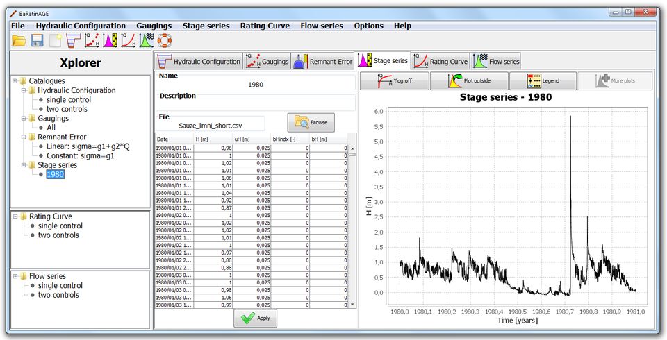

You can create a new stage series in several ways:
You will be asked to name this new stage series, and you can enter a description. You will then have to import the source file by clicking the "Browse" button and selecting the file. For example, you can select the file "Sauze_limni_short.csv" in the "exemple" directory, which contains a stage series of the Ardèche river at Sauze station for year 1980. The panel then updates as follows:

The table contains the following columns:
The processing of the stage series uncertainties intends to discriminate two types of errors: non-systematic errors (which vary at each time step) and systematic errors (which remain identical for a set of time steps). Typically, non-systematic errors are associated with the sensor noise and wavelets; systematic errors are associated with the periodic calibration of the sensor relative to the staff gauge (for a more detailed explanation, see this document). This type of error is in fact an unknown bias, which is assumed to be constant between two calibrations of the sensor. We must therefore specify two pieces of information:
For the stage series, a unique file format is supported for now: the .csv format. As for the gaugings, it uses a semicolon separator (you can open the "Sauze_limni_short.csv" file in your text editor to observe the format). The file content is exactly what you see in the BaRatinAGE table shown above (except that the date is ventilated on 6 columns: year, month, day, hour, minute, second). The simplicity of this format enables you to easily create/manipulate stage series files with your favorite spreadsheet.
At present, the stage series cannot be modified directly in BaRatinAGE: you must create and modify yourself the source file in .csv format. Future versions of BaRatinAGE will offer more tools for the management of stage series and their uncertainties.
In addition, note that the stage series files can become large when the sampling step is short and/or the duration is long. This can create a slight slowdown for the drawing the graph. This will also be improved in future versions of BaRatinAGE which will propose subsampling tools.